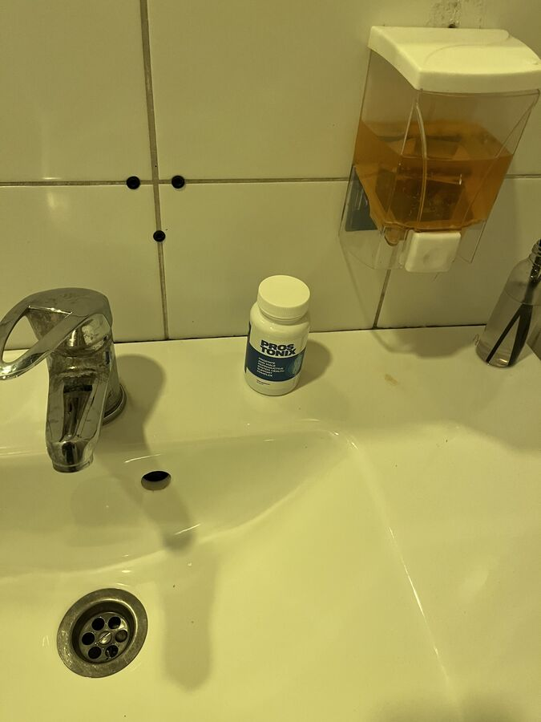

O número de homens com problemas de potência bate novos recordes em Portugal! Métodos inovadores de tratamento de impotência e prostatite em 7 dias!
O ano de apresentou dados recorde sobre o número de homens com impotência em Portugal. Factos assustadores e uma nova abordagem para resolver o problema de uma vez por todas!
A Sociedade Mundial de Urologia apresentou um relatório no 42º Congresso da Sociedade Internacional de Urologia com estatísticas assustadoras sobre o número de doenças urológicas em Portugal.
O Professor Berhard Fangmeier é um eminente urologista e andrologista especializado em problemas de saúde masculina. Membro do Conselho Europeu de Urologistas, membro do Colégio Americano de Cirurgiões (FACS), membro do Conselho Europeu de Medicina Sexual (FEBSM).
A melhoria do diagnóstico, o teste de novos métodos e a ineficácia do tratamento hospitalar foram os principais temas abordados no congresso.
Como resultado, os urologistas apresentaram estatísticas para 10 anos de trabalho:
- Para , há mais 60,5% de doentes com doenças do aparelho geniturinário.
- Os casos de impotência sexual masculina aumentaram 57%.
- Há mais 180,7% de casos de neoplasias malignas, o que significa um aumento de três vezes em relação a .
.jpg)
Porque é que o problema da disfunção erétil é importante para o nosso país?
Os homens portugueses adiam o tratamento, ignorando os primeiros sinais de falta de potência e prostatite. Mas a doença desenvolve-se sempre por fases.
Fases do desenvolvimento da impotência e suas consequências
Fase 1. A potência desaparece ocasionalmente, por exemplo, após a ingestão de álcool ou por si só. Por vezes, não há "vontade de fazer sexo". A maioria das pessoas atribui isso ao trabalho árduo, ao stress, etc. No entanto, este é o primeiro sinal de que só vai piorar com o tempo.
Fase 2. A potência desaparece cada vez com mais frequência. Mesmo quando existe, o pénis já não é tão duro como antes. O pénis pode cair durante a relação sexual ou quando se coloca um preservativo. Regra geral, um homem neste período começa a pensar no problema, mas limita-se ao facto de, por vezes, tomar Viagra.
Fase 3. A potência aparece ocasionalmente. A libido diminui drasticamente. O homem torna-se irritável, a força e o desejo de fazer qualquer coisa desaparecem. Começam os problemas familiares - palavrões frequentes na família, infidelidade feminina, o caso pode chegar ao divórcio.
Fase 4. Impotência total. Nem o Viagra ajuda. Até 91% dos homens nesta fase tornam-se solitários - as mulheres raramente vivem com homens impotentes e, se vivem, sofrem. A depressão desenvolve-se, bem como várias doenças físicas. O nosso organismo está organizado de tal forma que a sua principal função é a reprodução. Assim que é privado dela, o corpo começa a deteriorar-se muito rapidamente.
90% DOS HOMENS EM PORTUGAL TÊM PROBLEMAS NA CAMA e 73% dos homens tornam-se impotentes aos 40 anos!
Estes sintomas, aparentemente insignificantes nas primeiras fases, conduzem quase sempre a consequências irreparáveis:
A impotência
MOSTRAR FOTO
Cancro da próstata. A causa de morte mais frequente (até 88%) nos homens que sofrem de impotência.

MOSTRAR FOTO
Adenoma da próstata
MOSTRAR FOTO
Pedras nos rins. A doença dos cálculos renais também se desenvolve devido a uma diminuição da irrigação sanguínea dos órgãos pélvicos.

MOSTRAR FOTO
«Uma vida sexual irregular reduz a esperança de vida e conduz ao envelhecimento prematuro.
A prostatite ocorre em 100 por cento dos casos, ou seja, em todos os homens que sofrem de impotência e não são sexualmente activos.»
Andreas Schütte, Professor, Membro do Conselho Europeu de Urologia
O Viagra é uma droga assassina sintética
Devido ao facto de a potência poder desaparecer completamente, muitos homens tentam livrar-se dos problemas de potência assim que estes começam a aparecer. No entanto, até há pouco tempo, era impossível restaurar completamente a potência - os medicamentos disponíveis (por exemplo, o Viagra) melhoravam a potência APENAS POR UM TEMPO. Ao mesmo tempo, o uso frequente de Viagra aumenta drasticamente o risco de ataque cardíaco dez vezes!
O congresso também discutiu os problemas que podem ocorrer com a potência nos homens após o abuso de drogas químicas.
Discussão das complicações após a toma de Viagra (a fotografia mostra a operação de um doente com impotência total e complicações cardíacas causadas pela toma de Viagra).
O primeiro perigo é a enorme quantidade de medicamentos contrafeitos nas prateleiras das farmácias portuguesas. Os estimulantes para a potência contrafeitos representam entre 34 e 73% do mercado de todos os estimulantes nas farmácias portuguesas.
O segundo perigo são os graves danos para a saúde decorrentes da utilização do Viagra. Os estimulantes sintéticos são extremamente prejudiciais para a saúde do homem, pois para além da potência, afetam negativamente o fígado, os rins e o coração. Desde que o Viagra se tornou livremente disponível no nosso país, o número de casos de enfarte do miocárdio aumentou 26%!
Atualmente, 15 milhões de homens em todo o mundo são dependentes do Viagra e perderam a sua liberdade e saúde na luta pela potência.
Como curar todos os problemas de potência de uma vez por todas? Isto é algo que todos os homens deveriam saber.
Para além de discutir os problemas e as estatísticas deprimentes, foi também apresentada uma solução para estes problemas. A Sociedade Alemã de Urologia apresentou um relatório sobre os ensaios de um medicamento único para restaurar a potência e tratar a prostatite, bem como prevenir doenças do sistema geniturinário masculino.
Se trataba de un producto natural «PROS TONIX», que passou em todos os ensaios clínicos de grande escala em .
.jpg)
A Sociedade Europeia de Urologia apresenta a nova fórmula natural «PROS TONIX»
Georg Schatzl Membro do Conselho Europeu de Urologistas. Membro do Colégio Americano de Cirurgiões (FACS). Membro do Conselho Europeu de Medicina Sexual (FEBSM).
«Este foi o desenvolvimento mais difícil, mas mais necessário, da Sociedade Europeia de Urologia»
O Professor Georg Schatzl é um eminente urologista e andrologista especializado em problemas de saúde masculina, tais como DST, ejaculação precoce, infertilidade, vasectomia, disfunção erétil, infeções do trato urinário, urolitíase, incontinência urinária, bexiga irritável, incontinência noturna e exames urológicos. Ganhou muitos prémios e tem uma vasta experiência em ensino, gestão e garantia de qualidade. Está altamente qualificado para tratar todas as doenças urológicas e andrológicas. Membro do Conselho Europeu de Urologistas, membro do Colégio Americano de Cirurgiões (FACS), membro do Conselho Europeu de Medicina Sexual (FEBSM).
«PROS TONIX» é um ativador biológico. Isto significa que é constituído apenas por componentes naturais que atuam diretamente na glândula prostática, nos órgãos de toda a pélvis e aumentam o nível de fluxo sanguíneo no pénis e dão um impulso à síntese natural de testosterona.
Ao contrário de vários comprimidos sintéticos, «PROS TONIX» restaura a potência natural. O tipo que aparece sem quaisquer comprimidos. Como consequência, os homens já não vão à farmácia para o Viagra e meios semelhantes.
Ao contrário do Viagra e dos comprimidos sintéticos, o «PROS TONIX» restaura a potência natural.
De acordo com os resultados de pesquisas e ensaios clínicos, foram obtidos os seguintes resultados:
- Restauração da função erétil - 99,7%.
- Aumento da libido - 86,4%.
- Duração da relação sexual aumentou até 60-90 minutos.
- Risco de ataque cardíaco e acidente vascular cerebral diminuiu até 0,4%.
- Risco de trombose venosa profunda diminuiu até 0,7%.
- Risco de paragem cardíaca súbita diminuiu até 0,1%.
- Aumento do comprimento e largura do pénis - 100% por cento dos indivíduos.
Na prática, o «PROS TONIX» estimula a função sexual e ajuda a resolver os seguintes problemas masculinos:
- Aumenta a libido;
- Aumenta a nitidez das sensações durante a relação sexual, o orgasmo é mais brilhante e mais longo;
- Aumenta a libido e prolonga a potência nos homens;
- Encurta a pausa refratária entre ereções, aumenta o volume e a qualidade do sémen;
- Apoia o sistema imunitário e a função adrenal;
- Tem um efeito anti-inflamatório ligeiro na glândula da próstata;
- Tem um efeito notável no estado dos tecidos cavernosos do pénis, aumentando assim o seu tamanho. Todos os voluntários notaram um aumento do comprimento e da espessura do pénis no estado de ereção (até 1-2 cm de comprimento e 1 - 1,5 cm de largura).
Está provado que, como resultado da toma do medicamento, a saúde masculina é realmente restaurada. Não só a potência melhora, mas também o tamanho do pénis aumenta e a atividade sexual aumenta.
Também na conferência, representantes da Sociedade Europeia de Urologistas forneceram protocolos de ensaios clínicos e todos os outros documentos que comprovam a eficácia e a segurança do medicamento.
Comentários:
